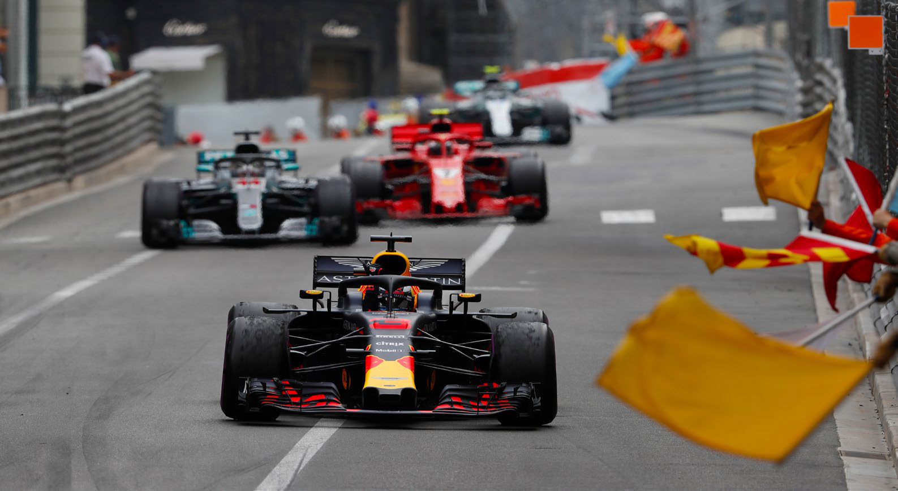

Sport |
||||||
|  | ||||||
|
Acasa
|
Galerie
|
Harta
|
Hoteluri
|
Descriere
|
Sporturi
|
Obiective Turistice
|
|
Formula 1 Din 1929, Marele Premiu al Principatului Monaco are loc în fiecare an pe străzile din Monaco. Este considerată a fi una dintre cele mai prestigioase curse de automobile din lume. Circuitul Monaco are nevoie de șase săptămâni pentru a fi amenajat și de încă trei săptămâni pentru a fi demontat. Circuitul este incredibil de îngust și strâmt și tunelul său, virajele strânse și multiplele urcări și coborâri îl fac să fie, probabil, cel mai dificil circuit de Formula Unu. Pilotul Nelson Piquet compara condusul pe circuit cu „mersul pe bicicletă printr-o sufragerie”. Fotbal Monaco găzduiește două mari echipe de fotbal în principat: clubului de fotbal masculin AS Monaco FC și clubul de fotbal feminin OS Monaco. AS Monaco joacă pe Stade Louis II și concurează în Ligue 1, prima divizie a fotbalului francez. Clubul este din unul dintre cele mai de succes cluburi din Franța, după ce a câștigat Liga 1 de șapte ori (cel mai recent în anul 2000) și a concurat la nivel de top în toate sezoanele. |
{kind=link}
{kind=link}